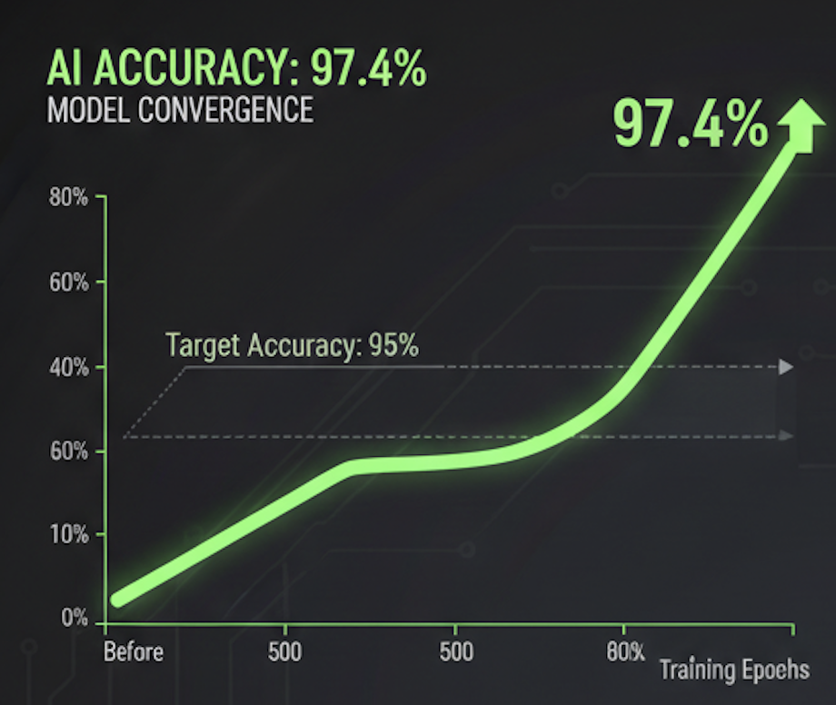
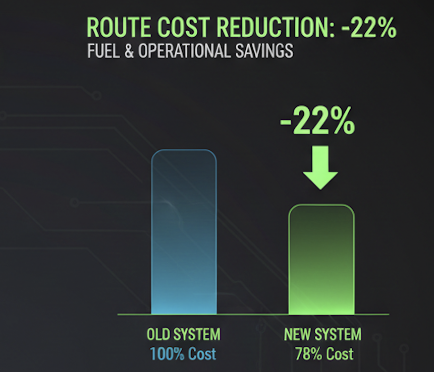
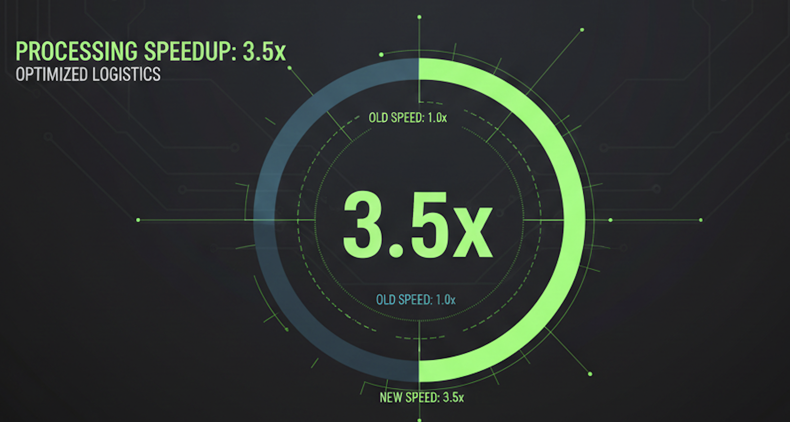

RESULTS
การวัดประสิทธิภาพและผลสัมฤทธิ์ของระบบ
97.4%
AI Accuracy

-22%
Route Cost Reduction

3.5x
Processing Speedup

บทสรุปการดำเนินงาน
จากการทดสอบและวิเคราะห์ประสิทธิภาพของระบบ REVERSECORE พบว่าการบูรณาการเทคโนโลยี AI เข้ากับระบบลอจิสติกส์ย้อนกลับสามารถสร้างความเปลี่ยนแปลงได้อย่างมีนัยสำคัญใน 3 มิติหลัก: ระบบสามารถทำความ แม่นยำในการคัดแยกได้สูงถึง 97.4% ซึ่งก้าวข้ามขีดจำกัดและข้อผิดพลาดที่เกิดจากดุลพินิจของมนุษย์ได้อย่างสมบูรณ์ ขณะเดียวกัน การจัดการเส้นทางแบบพลวัตช่วยลดต้นทุนการดำเนินงานลงได้ถึง 22% และด้วยประสิทธิภาพการ ประมวลผลที่รวดเร็วขึ้นถึง 3.5 เท่า ส่งผลให้ REVERSECORE เป็นโซลูชันที่ช่วยให้ภาคธุรกิจสามารถบริหารจัดการสินค้าคืนได้อย่าง "แม่นยำ ประหยัด และรวดเร็ว" อย่างเป็นรูปธรรม